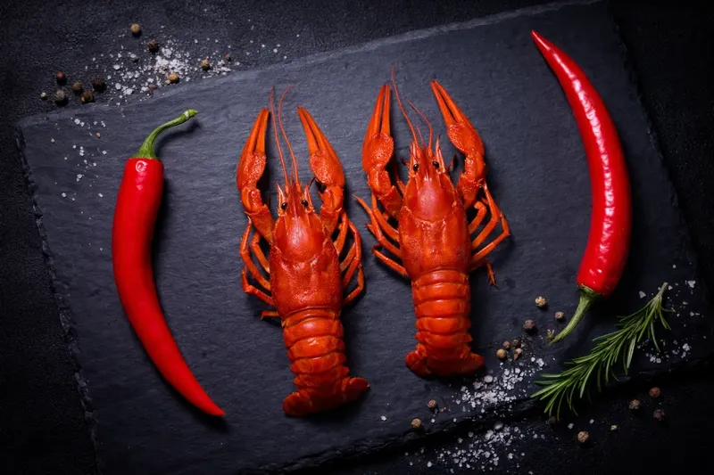
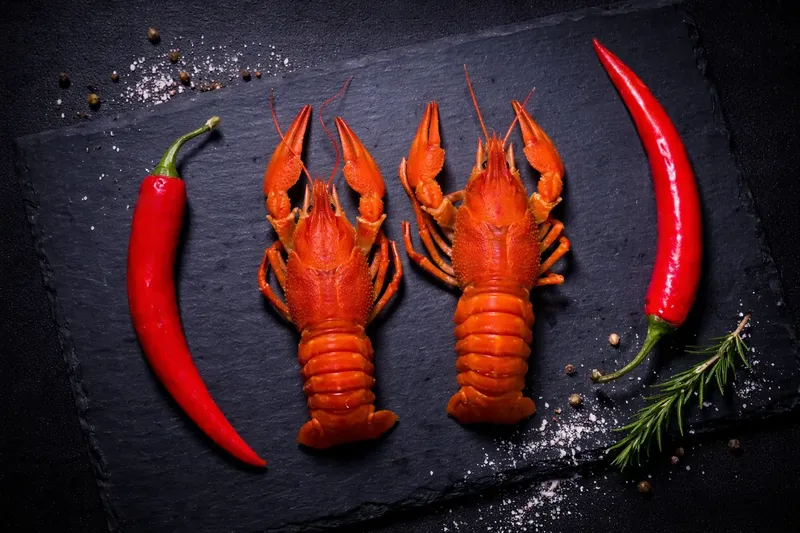
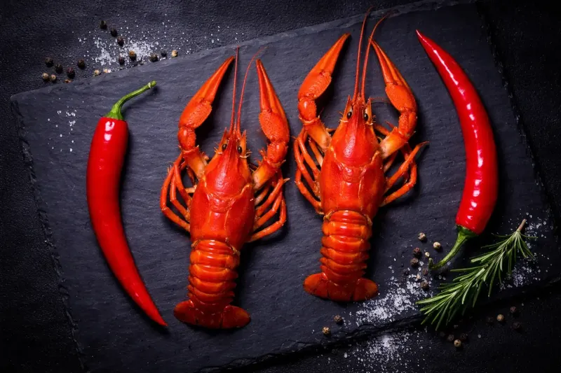
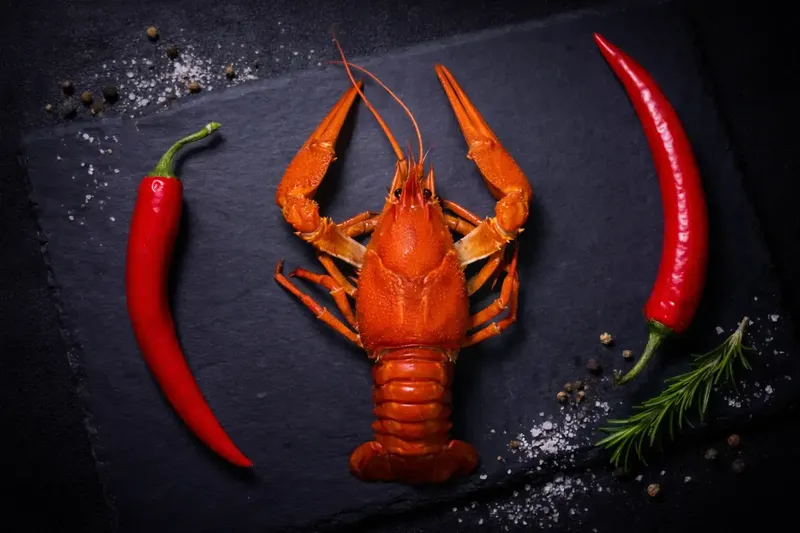

Живые и варёные раки
Сравните размеры и цены живых и варёных раков. Доставка по Беларуси и самовывоз в Минске.
Раки по размеру
Весь каталог раковВес одного рака указан в названии. Чтобы сравнить размеры, смотрите, сколько штук примерно приходится на килограмм.
Живые или варёные на выбор


Варёные раки
Все варёные раки-

Раки вареные мелкие 20-40 грамм “Фиш-Сити”
Около 35 шт. в 1 кг
109 BYN / кг
-

Раки вареные средние 40-60 грамм “Фиш-Сити”
Около 20 шт. в 1 кг
142 BYN / кг
-

Раки вареные крупные 60-80 грамм “Фиш-Сити”
Около 15 шт. в 1 кг
177 BYN / кг
-

Раки вареные отборные 80-100 грамм “Фиш-Сити”
Около 12 шт. в 1 кг
229 BYN / кг
Сколько раков взять на компанию?
Вес ориентировочный. Выберите результат с учётом того, что ещё будет на столе.
На 4 гостей — примерно 2 кг, если есть другие блюда, или 4 кг, если раки — главное блюдо.
На 10 гостей — примерно 5 или 10 кг соответственно.
Каких раков выбрать к столу
Выберите способ приготовления и размер, затем согласуйте вес и время получения.
Живые для варки, варёные для подачи
Живых раков выбирают для самостоятельного приготовления. К ним есть готовая смесь специй. Варёных можно сразу подавать: Fish City готовит их с укропом, душистым перцем, лавровым листом и сушёным апельсином.
Посмотреть варёных раковСколько раков в килограмме
В килограмме примерно 35 мелких раков (20–40 г), 20 средних (40–60 г), 15 крупных (60–80 г), 12 отборных (80–100 г) или 9 королевских (от 100 г). Чем крупнее раки, тем меньше штук в заказе того же веса.
Сравнить размеры Королевские раки от 100 гСамовывоз и доставка к нужной дате
Раков можно забрать в Минске на ул. Киевской, 12 или заказать с доставкой по Беларуси. Если заказываете к застолью, заранее сообщите желаемые время, размер и вес.
Адрес и время самовывоза Условия доставки